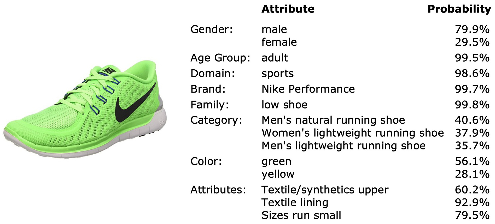
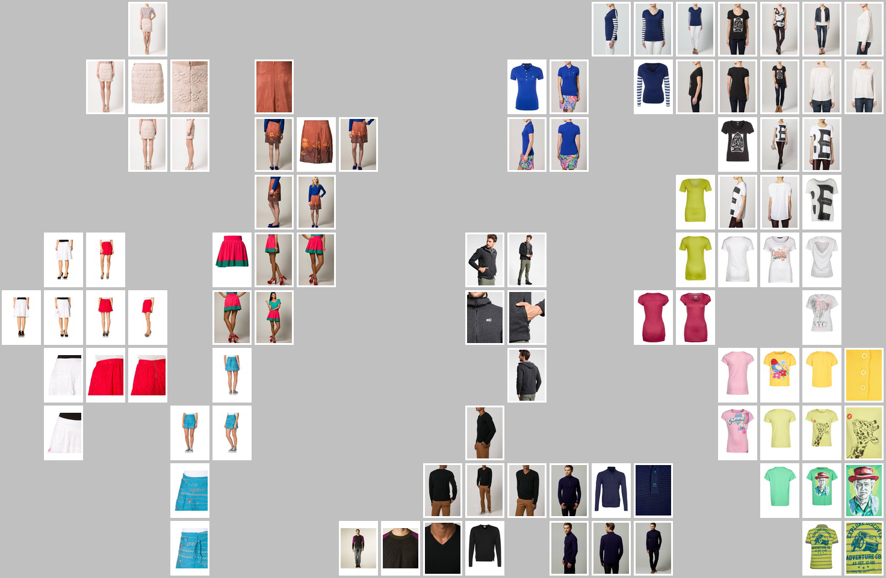

<!DOCTYPE html>
<html lang="en-US">
  <head>
    <meta charset="utf-8" />
    <meta name="viewport" content="width=device-width, initial-scale=1" />
    <meta http-equiv="X-UA-Compatible" content="IE=edge" />
    <meta name="theme" content="hugo-academic-group" />

     

    <script src="https://ajax.googleapis.com/ajax/libs/jquery/1.12.4/jquery.min.js"></script>
    <script src="https://research.zalando.com//js/hugo-academic-group.js"></script>

    <link rel="stylesheet" href="https://research.zalando.com//css/bootstrap.min.css" />
    <script src="https://research.zalando.com//js/bootstrap.min.js"></script>

    <link
      rel="stylesheet"
      href="//cdnjs.cloudflare.com/ajax/libs/highlight.js/10.6.0/styles/default.min.css"
    />
    <script src="//cdnjs.cloudflare.com/ajax/libs/highlight.js/10.6.0/highlight.min.js"></script>

    <link
      rel="stylesheet"
      href="https://cdnjs.cloudflare.com/ajax/libs/github-fork-ribbon-css/0.2.2/gh-fork-ribbon.min.css"
    />

    
    <script src="https://research.zalando.com//js/highlight.pack.js"></script>
    <script>
      hljs.initHighlightingOnLoad();
    </script>

    <link
      rel="stylesheet"
      href="https://research.zalando.com//css/font-awesome.min.css"
    />
    <link rel="stylesheet" href="https://research.zalando.com//css/academicons.min.css" />
    <link
      rel="stylesheet"
      href="//fonts.googleapis.com/css?family=Lato:100,300,400,700|Merriweather:100,400,700|Roboto+Mono"
    />
    <link
      rel="stylesheet"
      href="https://research.zalando.com//css/hugo-academic-group.css"
    />

    

    <link
      rel="shortcut icon"
      href="https://research.zalando.com//img/favicon.ico"
      type="image/x-icon"
    />
    <link rel="canonical" href="https://research.zalando.com/project/fashion_dna/fashion_dna/" />

    <title>Fashion DNA | Zalando Research</title>
  </head>

  <body>
    <div class="home-anchor" id="home"></div>
  </body>
</html>


<nav class="navbar navbar-default navbar-fixed-top" id="navbar-main">
    <div class="container">

        
        <div class="navbar-header">
            <button type="button" class="navbar-toggle collapsed" data-toggle="collapse" data-target=".navbar-collapse" aria-expanded="false">
                <span class="sr-only">Toggle navigation</span>
                <span class="icon-bar"></span>
                <span class="icon-bar"></span>
                <span class="icon-bar"></span>
            </button>

            <div class="navbar-brand">
                
                    <a class="logo" href="https://research.zalando.com/">
                        </img>
                    </a>
                
                
            </div>
        </div>

        
        <div class="collapse navbar-collapse" id="#navbar-collapse-1">

            
            <ul class="nav navbar-nav navbar-right">
                
                    
                        <li class="nav-item"><a data-scroll href="https://research.zalando.com/#top">Home</a></li>
                    
                
                    
                        <li class="nav-item"><a data-scroll href="https://research.zalando.com/#members">Members</a></li>
                    
                
                    
                        <li class="nav-item"><a data-scroll href="https://research.zalando.com/#publications">Publications</a></li>
                    
                
                    
                        <li class="nav-item"><a data-scroll href="https://research.zalando.com/#projects">Projects</a></li>
                    
                
                    
                        <li class="nav-item"><a data-scroll href="https://research.zalando.com/#posts">Blog</a></li>
                    
                
                    
                        <li class="nav-item"><a data-scroll href="https://research.zalando.com/#open-projects">Vacancies</a></li>
                    
                
                    
                        <li class="nav-item"><a data-scroll href="https://research.zalando.com/#contact">Contact</a></li>
                    
                
                
            </ul>

        </div>
    </div>
</nav>

<div class="container">
    

    <article class="article article-project" itemscope itemtype="http://schema.org/Article">
        <h1 itemprop="name">Fashion DNA</h1>
        
        

        

        <div class="article-style" itemprop="articleBody">
            <h3 id="research-project-by-christian-brachermemberchristian_b-sebastian-heinzmembersebastian_h--roland-vollgrafmemberroland_v">Research Project by <a href="https://research.zalando.com/member/christian_b">Christian Bracher</a>, <a href="https://research.zalando.com/member/sebastian_h">Sebastian Heinz</a> &amp; <a href="member/roland_v">Roland Vollgraf</a></h3>
<p>Unlike a brick-and-mortar department store, online retailers like Zalando must use digital representations of their offerings to entice customers. Traditionally, this takes the form of information stored in a catalog database, which collects categorical properties (tags), numerical descriptors (e.g., prices), and images of the items. Although this information is curated by in-house experts, assignments are often subjective (what makes a dress ‘dark red,’ or ‘leisure’?), and article imagery is highly stylized. It is also by no means complete. More importantly, there is no straightforward relation between these article attributes, and the properties individual customers actually care about:</p>
<ul>
<li>Does it fit?</li>
<li>How does it feel wearing?</li>
<li>Does it suit my style?</li>
</ul>
<h3 id="fashion-dna">Fashion DNA</h3>
<p>To make the properties of a fashion item more accessible, we collect the array information in the catalog and map it into an abstract mathematical linear space, the fashion space. There, the item is represented by a vector, its Fashion DNA. Unlike the catalog data, Fashion DNA is a fundamentally geometrical representation:  The similarity between two articles is encoded by their distance in fashion space, while article properties (is it blue? Is it a dress? Is it offered by Nike? Does customer #1,234,567 like it?) are associated with specific directions in this space.</p>
<p>For instance, the mosaic below is based on a t-SNE embedding that groups fashion articles by their distance:</p>
<p></p>
<p>This example arranges dresses along a slice of fashion space that connects red to blue (horizontal) and striped to dotted (vertical):</p>
<p></p>
<p>We may also define a similarity measure between fashion attributes, based on the angle between their associated directions. For instance, the brand <em>Desigual</em> ® is associated with the pattern attributes paisley, colorful, and floral.  Likewise, we can find similar brands, or identify customers whose personal style axis in fashion space aligns with the brand.</p>
<h3 id="applications">Applications</h3>
<p>Linear embeddings yield access to a powerful arsenal of inference methods in the fashion universe. Generally, Fashion DNA encodings are extracted as hidden activations in a feedforward deep neural network (DNN) that is trained on a relevant target, e.g., prediction of brands and silhouettes from images, mapping images to fashion items, or prediction of customer sales from attributes and images. The resulting Fashion DNA is correspondingly optimized for different tasks. For instance, the latter setup naturally leads to an enhanced collaborative filtering recommender system for fashion.</p>
<p>In addition to the choice of target data, we may select which input data to feed, and we have a wide latitude of neural network architectures to transform the data. Hence, we can experiment with Fashion DNA models that are tailored to specific use cases. A few prospective applications are:</p>
<h4 id="image-tagging">Image Tagging</h4>
<p>Here, the idea is to train a neural network on a set of images for an item, with the goal of predicting catalog tags (like brand, color, silhouette, etc.).  During inference, feeding item images into the trained network results in a vector of probabilities for each tag, providing estimates for target groups, brand membership, color, pattern, material, etc.:</p>
<p>There are a variety of applications beneficial to Zalando’s business, e.g.,</p>
<p></p>
<ul>
<li>AI tagging support – tagging new additions to the online shop is a resource-intensive, error-prone, and subjective task. The algorithm can suggest tags and identify labeling mistakes and omissions.</li>
<li>Finding fashion trends – analyzing images posted by trendsetters, influencers, and shows, one could detect fashionable styles early on.</li>
<li>Assessing competitors’ assortments – applied on crawled images, the method can provide continuously updated insights into the strategies of other players in the online fashion sector.</li>
</ul>
<h4 id="information-synthesis-inference-and-uncertainty">Information Synthesis, Inference, and Uncertainty</h4>
<p>Fashion information often is embedded in an implicit context that is easy to disentangle for a human observer with daily life experience, but presents a difficult challenge to machine learning algorithms. For instance, images may depict a model wearing a variety of fashion articles in front of a structured background, or detailed views of an item (seams, tags, brand logos, etc.) that are of particular interest to customers. It doesn’t take much effort for a human to focus on a specific element of the model outfit (the image segmentation problem), or to imagine the three-dimensional appearance of an article from a few two-dimensional snapshots.</p>
<p>The ease at which humans go about these tasks suggests that our internal representation “engine” is not only able to aggregate the information, but also can infer missing attributes and handle uncertainty. Conventional feed-forward neural network architectures are not well equipped for the purpose, while more recent probabilistic models like variational autoencoders form a basis for developing a more powerful representation scheme.</p>
<p>Still, even minor tweaks like changing the loss function can already render Fashion DNA much more resilient to the presentation of an item, as the map below demonstrates:</p>
<p></p>
<p>Note that the model assigns similar encodings to very different views of an article (visible as clusters in the map), while still being able to extract abstract attributes like brand, silhouette, etc., with good precision.  Such Fashion DNA is a useful substrate for our efforts to solve the street-to-shop task, matching fashion items depicted in real-life images to items in the online store.</p>

        </div>
    
        
     </article>
    
   <nav>
    <ul class="pager">
        
        <li class="previous">
            <a href="https://research.zalando.com/project/sample_efficient_reinforcement_learning/sample_efficient_reinforcement_learning/">
                <span aria-hidden="true" class="darknav">&larr;&nbsp;Previous project:</span>
                Sample Efficient Reinforcement Learning
            </a>
        </li>
        

        
    </ul>
</nav>


</div>

<footer class="site-footer">
    <div class="container">
        <p class="powered-by">

            <a href="https://research.zalando.com/imprint">Imprint</a>  ·  <a href="https://research.zalando.com/privacy">Privacy Policy</a>   ·  © Zalando SE, 2021 &middot; 

            Partially powered by the <a href="https://github.com/gcushen/hugo-academic" target="_blank">Academic theme</a> for <a href="http://gohugo.io" target="_blank">Hugo</a>.

            <span class="pull-right"><a href="#home" id="back_to_top"><span class="button_icon"><i class="fa fa-chevron-up fa-2x" aria-hidden="true"></i></span></a></span>

        </p>
    </div>
</footer>

<script src="//cdnjs.cloudflare.com/ajax/libs/gsap/1.18.4/TweenMax.min.js"></script>
<script src="//cdnjs.cloudflare.com/ajax/libs/gsap/latest/plugins/ScrollToPlugin.min.js"></script>


<script>
        MathJax = {
          tex: {
            inlineMath: [['$', '$'], ['\\(', '\\)']],
            displayMath: [['$$','$$'], ['\\[', '\\]']],
            processEscapes: true,
            processEnvironments: true
          },
          options: {
            skipHtmlTags: ['script', 'noscript', 'style', 'textarea', 'pre']
          }
        };
        </script>

<script src="https://polyfill.io/v3/polyfill.min.js?features=es6"></script>
<script id="MathJax-script" async src="https://cdn.jsdelivr.net/npm/mathjax@3/es5/tex-mml-chtml.js"></script>

</body>
</html>

